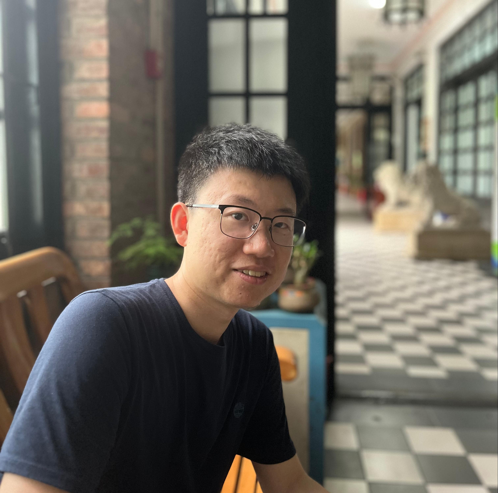

Ph.D. Student in Information Sciences · UIUC
I am a third-year Ph.D. student at the School of Information, UIUC, advised by Prof. Jiaqi Ma. My research focuses on data-centric AI for LLM and foundation models, especially through principled methods of data attribution.
I will join Google Research as a research intern in Summer 2026.
Previously, I was a Machine Learning Engineer at Intel (2020–2023) and a Research Intern at Microsoft MSRA (2025).
📧 junweid2 AT illinois DOT edu · 🏡 Urbana, Illinois
(* Equal Contribution)
→ See all papers